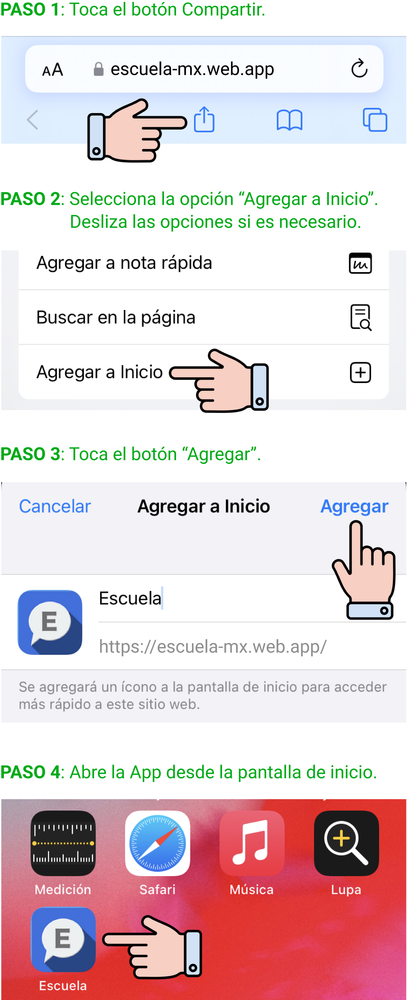

Cargando...
Schoolify es una aplicación de comunicación escolar que permite a padres de familia y tutores recibir notificaciones importantes sobre la asistencia, conducta y cumplimiento académico de sus hijos.
} @if(!isIOS) { @if(installAppService.promptStatus) {La App ya está instalada y lista para usarse, búscala en tu pantalla de inicio.
} } @if(isIOS) {